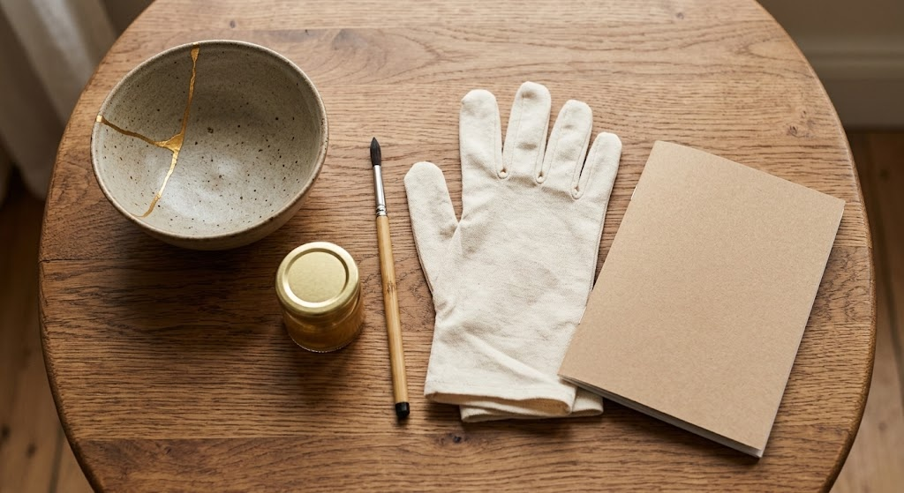

A starter-level kintsugi repair kit with a 20-page guide, food-safe resin, and gold finish - built for a genuine first attempt, not just the materials alone.

A 20-page booklet walks through every step.
Repaired pieces go back into everyday use.
Suited to glass, wood, marble, and concrete too.
Kintsugi treats a crack as part of an object's story rather than a flaw to hide - the gold seam becomes the most visible, most intentional part of the piece.
A starter kit with a real instruction guide removes most of the guesswork for a first attempt, so the result looks deliberate instead of messy.
Low-stakes practice piece for a first repair.
Give a meaningful piece a second life.
Comes packaged with Japanese-inspired kraft paper.
No, it's designed to be beginner-friendly with full instructions.
Check the included instructions for exact cure times.
Yes, it's suited to glass, wood, marble, and concrete as well.
A beginner kintsugi repair starter kit with full instructions - see current pricing and availability on Amazon.
Check Price on Amazon →